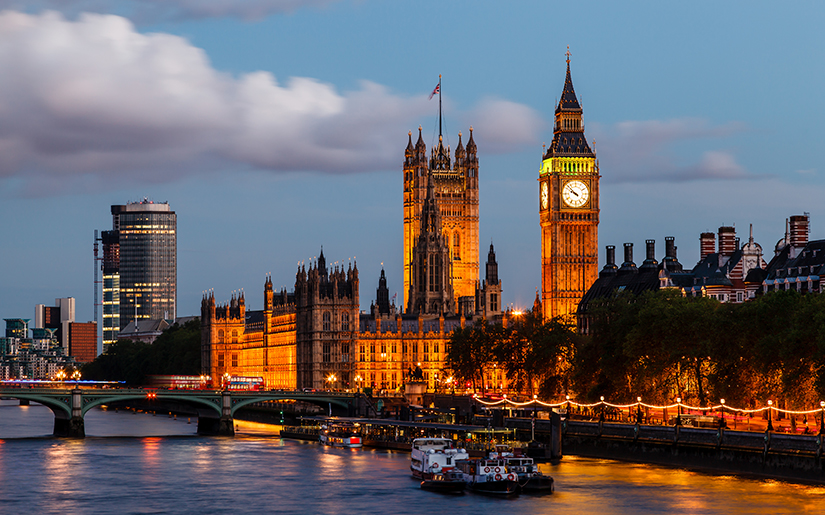

London 
London is the capital city of England. It is the most populous city in the United Kingdom, with a metropolitan area of over 13 million inhabitants.
Standing on the River Thames, London has been a major settlement for two millennia, its history going back to its founding by the Romans, who named it Londinium.
London is situated in southeastern England, lying astride the River Thames some 50 miles (80 km) upstream from its estuary on the North Sea. In satellite photographs the metropolis can be seen to sit compactly in a Green Belt of open land, with its principal ring highway (the M25 motorway) threaded around it at a radius of about 20 miles (30 km) from the city centre. The growth of the built-up area was halted by strict town planning controls in the mid-1950s. Its physical limits more or less correspond to the administrative and statistical boundaries separating the metropolitan county of Greater London from the “home counties” of Kent, Surrey, and Berkshire (in clockwise order) to the south of the river and Buckinghamshire, Hertfordshire, and Essex to the north. The historic counties of Kent, Hertfordshire, and Essex extend in area beyond the current administrative counties with the same names to include substantial parts of the metropolitan county of Greater London, which was formed in 1965. Most of Greater London south of the Thames belongs to the historic county of Surrey, while most of Greater London north of the Thames belongs historically to the county of Middlesex. Area Greater London, 607 square miles (1,572 square km). Pop. (2001) Greater London, 7,172,091; (2011 prelim.) Greater London, 8,173,941.